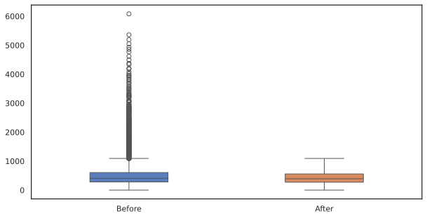
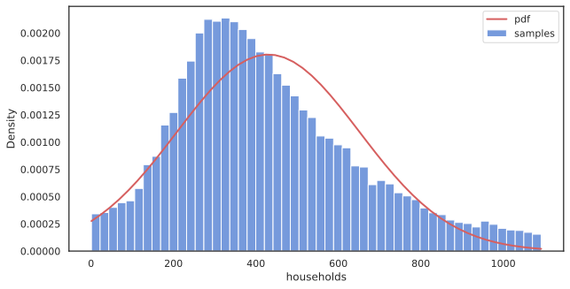
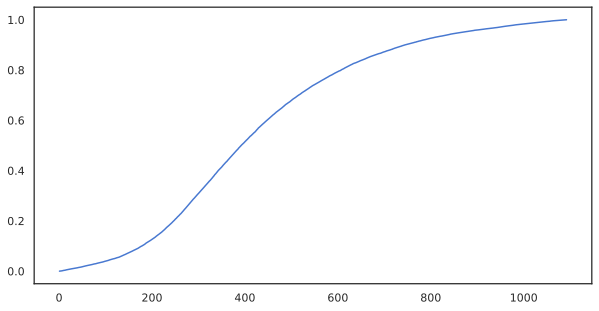
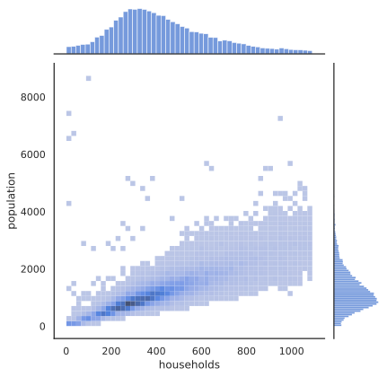
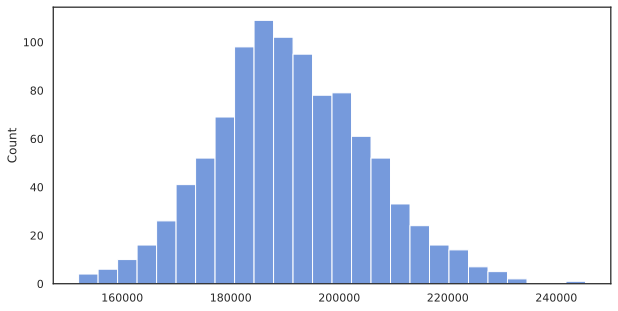

# Boxplot of dataset before and after removing outliers
s1 = pd.Series(dataset['households'],
name='Before')
q1 = s1.quantile(.25)
q3 = s1.quantile(.75)
iqr = q3 - q1
lower = q1 - 1.5 * iqr
upper = q3 + 1.5 * iqr
outliers = (s1 < lower) | (s1 > upper)
s2 = pd.Series(s1[~outliers], name='After')
df1 = pd.concat([s1, s2],axis=1)
sns.boxplot(df1, orient='v', order=['Before'],
width=0.4)
sns.boxplot(df1, orient='v', order=['After'],
width=0.4, whis=[0, 100])
# set clean data for future cells
dataset = dataset[~outliers]Probabilities and Statistics Term Project
Dataset: California Housing prices
Student ID: 26013429
Full Name: Pak Andrei
Dataset Source: https://www.kaggle.com/datasets/camnugent/california-housing-prices
Target variable: Median households (households)
Predictor: Median population (population)
Multivariate variables
| Variable name | Description |
|---|---|
longitude |
A measure of how far west a house is; a higher value is farther west |
latitude |
A measure of how far north a house is; a higher value is farther north |
housing_median_age |
Median age of a house within a block; a lower number is a newer building |
total_rooms |
Total number of rooms within a block |
total_bedrooms |
Total number of bedrooms within a block |
population |
Total number of people residing within a block |
households |
Total number of households, a group of people residing within a home unit, for a block |
median_income |
Median income for households within a block of houses (measured in tens of thousands of US Dollars) |
median_house_value |
Median house value for households within a block (measured in US Dollars) |
ocean_proximity |
Location of the house w.r.t ocean/sea |
Boxplots
Removing outliers (Anything beyond 1.5*IQR)
Boxplots

Histogram & Normal PDF

CDF

Conditional Probability
\[P\left(B | A\right) = P\left(A \cap B\right) | P\left(A\right)\] \[A = \text{population} > 3000\] \[B = \text{households} > 1000\]
# P(B|A) = P(A & B) / P(A),
# B = population > 1000
# A = households > 3000
df1 = dataset
a = df1["population"] > 3000
b = df1["households"] > 1000
cond = (a & b).sum() / a.sum()
print(f"A = {a.sum()}, B = {b.sum()}")
print(f"(A & B) = {(a & b).sum()}")
print(f"P(B | A) ≈ {cond:.4f} or {cond * 100:.2f}%")A = 425, B = 322
(A & B) = 120
P(B | A) ≈ 0.2824 or 28.24%2D jointplot distribution histogram

Sample distribution
Mean: 432.07662
Confidence Interval(CI)
\[\text{CI} = \bar{x} \pm Z_{\frac{a}{2}} \cdot \frac{\sigma}{\sqrt{n}}\]
# CI = x_hat +- z * (s / sqrt(n))
s = s1.sample(n=100)
confidence = .95
alpha = 1 - confidence
z = stats.norm.ppf(1 - alpha / 2)
lower = s.mean() - (z * s / np.sqrt(s.size))
upper = s.mean() + (z * s / np.sqrt(s.size))
ci = s[(s > lower) & (s < upper)]
print(f"""\
Confidence: {confidence * 100}%
CI: ({ci.min()}, {ci.max()})\
""")Confidence: 95.0%
CI: (363.0, 532.0)Null hypothesis testing
Hypothesis testing that the mean of population is lesser than ~427 \[H_0 : \mu = \mu_0 \approx 427, H_a : \mu > \mu_0\] \[\text{P-value} : \mu > \mu_0 = P\left(Z\geq z\right) = 1 - \Phi(z)\] \[Z = \frac{\bar{x} - \mu_0}{{\sigma} \mathbin{/} {\sqrt{n}}}\]
# h_0 = mu = mu_0vmin=50, vmax=100
# h_a mu > mu_0
mu_0 = 427
vars = s1.describe()
z = (vars['mean'] - mu_0) / (vars['std'] / np.sqrt(s1.size))
phi = stats.norm.cdf(abs(z))
p_value = 1 - phi
confidence_level = 0.05
print(f"With p value = {p_value:2f} and z = {z:2f} at alpha {confidence_level}({confidence_level * 100}%) confidence level:")
print("\t", end="")
if p_value > confidence_level:
print("Fail to reject H_0")
else:
print("Reject H_0")With p value = 0.036244 and z = 1.796039 at alpha 0.05(5.0%) confidence level:
Reject H_0Multivariate matrix and Correlation
Line regression and prediction (slope)
\[\hat{y} = \beta_0 + \beta_1 x\] \[\beta_0 = b ,\text{y-intercept}\] \[\beta_1 = m ,\text{slope}\]
Slope: 0.2704437974
Intercept: 93.90
R^2: 0.72Line regression and prediction (scatterplot)
y_real = pd.Series(dataset['households'], name="Real value")
y_pred = pd.Series(res.slope*dataset['population'] + res.intercept, name="Predicted from income")
min = np.array([y_real.min(), y_pred.min()]).min()
max = np.array([y_real.max(), y_pred.max()]).max()
# little bit redundant, because r was calculated in cell above
r, p = stats.pearsonr(dataset['population'], dataset['households'])
print(f"Correlation: r = {r}")
g = sns.scatterplot(x=y_real, y=y_pred,
alpha=0.4,color="0.4",edgecolor="w")
g.plot([min, max], [min, max], color='r')Line regression and prediction (scatterplot)
Correlation: r = 0.847261200405081